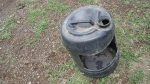

Chicken (new, with animal welfare information)


{kind=link}
{kind=link}
{kind=link}
{kind=link}
{kind=link}
{kind=link}
{kind=link}
{kind=link}
{kind=link}
{kind=link}
{kind=link}
{kind=link}
{kind=link}
{kind=link}
{kind=link}
{kind=link}
{kind=link}
{kind=link}
{kind=link}
{kind=link}
{kind=link}
{kind=link}
{kind=link}
{kind=link}
{kind=link}
{kind=link}
{kind=link}
{kind=link}
Living conditions of chickens must be established and maintained to "accommodate the health and natural behavior of animals, including access the outdoors, shade, shelter, exercise areas, fresh air, and direct sunlight. Continuous confinement is not permitted.
The welfare of chicken includes its physical and mental state. Good poultry welfare implies both fitness and a sense of well-being for the animal. Any poultry kept by human, must at least be protected from unnecessary suffering.
Introduction
Origin of chicken
The term poultry refers to domesticated birds kept for meat, eggs and feather production. Domestication of poultry is thought to have started in South Asia, at least 2000 years ago. The Asian Red Jungle Fowl is generally assumed to be the ancestor of the modern poultry breeds, but maybe the first domestication of the fowl took place much earlier in China. Following this domestication various breeds have originated from isolated groups of poultry, partly by adaptation to the various environments or cultivation by man. Today's poultry breeds are all different based on appearance and performance.
Understand chicken as the animals they are, information on behaviour
Chicken are animals with a coherent social structure. If they are in groups up to 25 animals, they have a pecking order based on strength, but they can recognize up to 100 other hens. They communicate a lot both using body, tail and voice. They are hunted and eaten by many, and a large part of their alertness, communication and behavior is about predators and e.g. warning each other against them. This emphasizes their need for being managed in a calm way. As humans, we should never make sharp, loud sounds or sudden movements, when we are with our chicken.
They have a wide range of comfort and grooming behavior, such as preening (maintenance of feathers), stretching wings, and keeping themselves clean and well managed. They have a strong incentive for dust bathing, which is a way of preventing attack of external parasites and as such very important for their well-being. They will normally scavenge for feed, both for seeds, greens, vegetables and worms and other small animals. Their search for feed leads to a lot of ground-scratching and pecking, and they have a great need for this type of behavior. They have a need for sleeping and undisturbed resting, and will find the highest point to be protected. Hens can become 'broody' which means that they are highly motivated to have chicken, and become very frustrated if they are not allowed to nest building. On the other hand, they cannot be forced to become broody; some breeds become broody more easily than others. They have a strong sense of being mothers and taking care of their small chicken and protect them.
East African and Kenyan poultry population
Village chicken production systems are mostly based on the local scavenging domestic fowl (Gallus domesticus), which predominates in African villages.
Kenya has an estimated poultry population of 29 million birds, with chicken forming the largest proportion. Of these 76% consist of indigenous chicken, layers 9 %, and 13% broilers. Other poultry species like ducks, geese, turkeys, pigeons, ostriches, guinea fowls, and quails make up 2 % of the poultry population. Poultry is one of the most important livestock enterprises in rural households where over 70% (24 million) of the country's population live and derive their livelihood. Indigenous chicken are kept by 90% of rural households while broilers and layers are mainly reared by urban and peri-urban farmers who target the ready market. Other poultry are kept by farmers with special interests.
On average, each household in Kenya keeps about 10 chickens, mainly for domestic consumption. There is a relatively high mortality because of lack of drinking water and disease control, and predators. On average, a farmer loses up to 40 percent of their stock annually due to these easily controllable challenges. With proper management practices indigenous chicken can become very productive and have a very good potential for improving the income of the owners.
Village chicken systems in rural Africa are characteristically:
- an indigenous and integral part of the farming systems, with short life cycles and quick turnovers
- low input production systems, the majority free range chicken
- a means of converting low-quality feed into high quality protein
Hybrid layers
Broilers
Broilers are heavy breeds, often hybrid breeds specially bred for meat production, and bought as young chicks. In organic farms, less fast-growing broilers should be preferred, and they should have outdoor access. Conventional broiler hybrids are very fast growing birds and need specially manufactured feeds and very controlled conditions, and their bones are often weak. These breeds must be discouraged in organic farms, and they should be allowed exercise areas, preferably outside.
Generally, robust and suitable breeds should be chosen in organic herds. It is ethically right to choose animals which can both lay eggs and where the males can be used for meat production. In many industrial countries, the breeds are specific for either egg production or meat production, and this means that e.g. the males from egg producing breeds are killed just after hatching, because they are not good for meat production. This is an ethical dilemma of organic production.
Chicken management and raising according organic standards
The following are required:
- Poultry or poultry products must come from chicken that have been under organic management from the second day of life. If one cannot verify this they are not raising organic chickens.
- Organic chicken must not be beak trimmed, which is a practice in some conventional poultry productions.
- All feed, except minerals and vitamins, must be organically produced. Non-synthetic vitamins are preferred, but synthetic sources are allowed if non-synthetics are not available.
The following feeds are prohibited:
- i. Animal byproducts from mammals and poultry, such as meat and bone meal, are not allowed in feed rations.
- ii. Fishmeal is not permitted, (except it can be proved that it is organically produced).
- iii. Synthetic amino acids are not permitted.
- iv. Non synthetic but non agricultural products are permitted.
Organic guidelines
The handling of feed ingredients must comply with organic requirements. Some people may buy organic feed from mills or grow their own ingredients for feed, but organic guidelines must be followed with either choice.
- No drugs may be used to promote growth.
- Transporting Live Chicken upside down is not allowed, regardless of the distance
- Physical alterations such as beak trimming and toe trimming are not allowed, exceptions could be when the welfare of the animal or flock is threatened. Beak trimming and toe trimming are still discouraged and would be handled on a case by case basis.
- Living conditions must be established and maintained to "accommodate the health and natural behavior of animals, including access the outdoors, shade, shelter, exercise areas, fresh air, and direct sunlight. "Continuous confinement is not permitted, but temporary confinement is allowed if adequately justified.
- Dust wallows are required, as is clean, dry bedding. Any bedding that is of a type typically consumed by poultry must meet all organic standards.
- Birds are not permitted to come into contact with treated wood used to construct chicken pens.
- Health care measures must include preventive practices such as good nutrition, sanitation, healthy living conditions and vaccinations. Preventive use of antibiotics is not permitted. Synthetic parasiticides including coccidiostats are not permitted. Although some natural alternative products are allowed, health problems must be controlled primarily through good management.
- Birds that do become sick cannot be withheld from medical treatment just to preserve their organic status. They should be medicated and then sold into the conventional marketplace.
- Chicken manure must be managed in a way that does not contribute to contamination of crops, soil, or water and that optimizes the recycling of nutrients.
FIVE FREEDOMS FOR CHICKEN WEALTH - IMPORTANT
The welfare of poultry includes its physical and mental state. Good poultry welfare implies both fitness and a sense of well-being for the animal. Any poultry kept by man, must at least be protected from unnecessary suffering.
For more information on What to consider when choosing to keep animals see here
Breeds and Breeding
Kenya currently has limited chicken breeds namely indigenous chicken, the hybrid layers, and broilers.
Indigenous chicken breeds
| Indigenous cocks |
| (c) A. Wachira, KARI, Kenya
|
| Indigenous cocks |
| (c) A. Wachira, KARI, Kenya
|
| Frizzled feathered chicken |
| (c) A. Wachira, KARI, Kenya
|
| Feathered shank hen |
| (c) A. Wachira, KARI, Kenya
|
| Kuchi game bird |
| (c) A. Wachira, KARI, Kenya
|
| Normal feathered indigneous chicken |
| (c) A. Wachira, KARI, Kenya
|
| White Leghorn |
| (c) A. Wachira, KARI, Kenya
|
Light laying breeds include the White Leghorn, Brown Leghorn and Black Minorca. The maximum adult bodyweight of light races is about 2 kg for females and 2.5 kg for cocks. The White Leghorn is known to lay a large number of white eggs. It requires less feed due to its small size and is an efficient feed converter. Its low body weight allows it to withstand high temperatures better than other breeds. However, White leghorns are generally nervous and at the end of the laying period give relatively less meat than heavier breeds. For this reason the use of lighter breeds has generally changed in favour of crosses.
| RIR |
| (c) A. Wachira, KARI, Kenya
|
| New Hampshire |
| (c) A. Wachira, KARI, Kenya
|
| New Hampshire |
| (c) A. Wachira, KARI, Kenya
|
| Light Sussex |
| (c) A. Wachira, KARI, Kenya
|
| Australorp |
| (c) A. Wachira, KARI, Kenya
|
Heavy breeds
| Broilers |
| (c) A. Wachira, KARI, Kenya
|
| Plymouth hen |
| (c) A. Wachira, KARI, Kenya
|
| Buff Orpington |
| (c) A. Wachira, KARI, Kenya
|
Hybrids
These are crossbreds originating from breed crossing. Their performance and viability (hybrid vigour) is better than the pure breeds. Breed crossing is practised in most developing countries including Kenya. Large scale poultry enterprises always use hybrids originating from line crossing due to their superior performance.
Commercial Pure and hybrid birds are produced and sold by a limited number of breeding companies to poultry farms in almost every country of the world.
 |
| Hybrid Cockerels |
| (c) A. Wachira, KARI, Kenya
|
| Hybrid layer |
| (c) A. Wachira, KARI, Kenya
|
| Day old hybrid chicks |
| (c) A. Wachira, KARI, Kenya
|
Commercial sources of breeding stock in Kenya
Buy day-old chicks from hatcheries such as:
- Kenchick
- Muguku
- Kenbrid
- Sigma suppliers
- Western hatcheries
- Bixa north coast
Breeding
Introduction and management of cocks
Introduce one new cock for every 10 hens every two years, in order to avoid inbreeding. Improved indigenous chickens for improving the local breeds can be bought from Naivasha research station in Kenya as well as from private breeders.
Brooding hens and cycle
In the village setting care must be taken to protect brooding hens from predators, rodents and other forms of stress. If a brooder hen is well protected and comfortable she can easily hatch 15 eggs per sitting. A brooding cycle takes minimum 18 days after which the first eggs should start hatching. The mother will normally keep the chicks with her for a day or two before taking them to food and water. Any eggs not hatched after this will go cold and most likely not hatch. It is highly advisable to keep food and clean water available near the brooding hen during this whole period for her to hatch the maximum amount of chicks.
Selection of eggs for setting
When a hen is broody, she will start laying an egg every day. If she should have a clutch of chicken hatched at about the same time, the eggs are removed from her and carefully stored until there are enough for a whole clutch. Then they are all carefully placed in the nest so that she can sit on them until hatching. A improved nutrition can raise the average quantity of eggs laid per clutch by 100%. For a successfull hatching, the eggs must be handled carefully from laying till setting. Eggs should be stored with the broad end facing upwards, as at this end there is an air sack, through which the egg breathes. Eggs should be stored in a clean and dried place to prevent rotting. Since fertile eggs grow slowly, eggs older than 14 days should not be used for hatching.
Shortening of the reproductive cycle
By shortening the reproductive cycle, hens lay eggs earlier and double the number of clutches per hen per year. Improved management increase the survival rates of the chicks. Shortening of the reproductive cycle can be achieved by better feeding, protection from predators and rodents, timely vaccinations and (if relevant) deworming, control of external parasites, and culling of aggressive and unproductive birds.
Serial hatching
Since fertile poultry can be used to sit on eggs continuously for two or more times by removing the chicks every time they hatch and replacing them with new eggs. Ducks can sit on 30 to 35 eggs and can be used for up to six consecutive times. In an organic farm, it is important to think about fairness in this situation, and let the hen have their offspring with them. Combining serial hatching with synchronisation (see below), more chicks will be able to hatch without using an incubator. Turkeys are also excellent chick brooders and can raise up to 50 chicks at the time. The rest of the procedure in introducing a cock for every 10 hens and the selection of the eggs is the same as with non-serial hatching.
Synchronised hatching
It can be an advantage to have more clutches of chicken hatched on the same days, because it fits well with feeding and vaccination etc., and maybe also with selling the chicken later. When hens that started laying within the same week get brooding, the first hen to reach this stage can be delayed by being given one egg to sit on. This will be repeated for the second and third hens, so that all the hens are set on one day. By the time of setting, all 'dummy' eggs should be destroyed. The time between the first hen and the last should not be more than one week. Again, in an organic farm, it is important to consider naturalness and fairness also in this situation.
Day old chicks need to be kept warm at all times. As they grow and the feathers start to develop they tolerate cold better. At the same time they need to access feed and clean water at all times as they feed with short intervals.
Brooder Preparation
- Use hard boards to make a brooding ring of 60 cm height
- put at least 5 cm of clean dried grass/leaves (litter) on the floor inside the brooding ring
- Start with a density of 50 chicks per square metre
- A hover/cover should be provided about the brooder, to reduce heat wastage
- Make space for feed and water feeding equipment inside the brooder ring
Brooding of the broiler chicks is similar to that recommended for layer chicks, but the feed is different. Make sure feeds are bought as recommended.
| Heat Sources |
|
| Temperatures |
|
| Kerosene brooder |
| (c) A. Wachira, KARI, Kenya
|
| Brooding - temperature |
| (c) A. Wachira, KARI, Kenya
|
- Fresh air and light should be allowed in the brooder but no drift.
- The litter in the brooder should always be dry.
- Clean and disinfect brooder areas 1 to 2 weeks before bringing in new chicks.
- Beware of brooder fires. Take precautions when using charcoal Jikos
As soon as the day old chicks arrive on the farm it is a good idea to make sure each individual bird gets to drink fresh clean water. They can be dehydrated from travelling. Then release them into the warm brooder ring. Show a few of the chicks where the feed is and the others will learn by example.
Molting
Normally layer hens are economical to keep for about 2 years. However after about 12 months of laying, we can expect a period of resting or molting. In the natural life cycle of chickens this is the breeding period which should be respected.
Molting involves "shedding" of feathers from an otherwise healthy chicken. A molting chicken will appear more ragged than bald, as if the feathers are thinned out. Feathers will lack the normal shining appearance and appear spotty. Good producers molt fast, and normal molting times of layers should not greatly exceed 10 weeks. After this the layers can with good management come back to good production for a second year before they should be allowed to retire.
Chickens lay eggs for around 4-5 years. Then they stop, they run out. They sort of go into a chick-menopause state. Chickens that are genetically bred to lay eggs (layers) will run out of their finite egg supply faster. Chickens that lay only occasionally (bantams and exotics) might lay longer as they only squirt out an egg when they feel like it. Even under the very best of conditions, at some point a chicken is going to stop laying eggs. She is going to stop being productive and when that happens you need to figure out what to do with her. Old hens do not eat like the young ones. They are on a lower metabolism. So, ifs fair to keep them until they die a natural death, they can still be part of the flock without costing you too much.
Housing
Why should poultry be housed?
Housing is necessary to protect chicken against predators, thieves, adverse weather (rain, sun, cold winds, low night temperatures) especially during the night, and to provide shelter for egg laying and broody hens. Suitable poultry houses are important for efficient production and management. Poultry houses and shelters vary depending on availability of materials, weather and tradition. Choice of chicken housing should be based on cost, durability and usage. In organic production, outdoor access should be provided, and the hens or chicken can choose whether to be inside or outdoor.
Points to consider when selecting sites for poultry housing:
- Provision of dry, friable litter.
- Avoidance of key areas that can be patrolled by predators.
- Dark areas to be avoided except for nest boxes.
- In fixed house situations, either wire mesh or stones in areas immediately outside pop holes.
- Air quality (i.e. low ammonia levels, correct humidity, correct temperature and good ventilation) plays a crucial role in health management. The position of a house can influence ranging activity and bird health. Soil type and drainage are instrumental in determining the extent of build up of soil-borne parasites.
- Locating houses on free draining, flat, shady, south facing pasture is preferable in order to minimise the build up of internal parasites and coocidial oocysts and to ensure better retention of grass cover.
- Poultry houses should have windows on either side for ventilation. In addition a hole or ridge on the roof will ensure proper ventilation and give light making it easier to work in the house. Make sure winds ventilate the house without making chicken cold. Make sure that there are no draughts. Sitting houses should be placed at right angles to the prevailing wind slightly moderates the amount of wind entering the building through the pop holes.
- Ideally, houses should be positioned in the centre of the land area, where the hens or chicken should have access, so that a series of radiating paddocks can be created around the unit.
- Accessibility during all weather conditions is an important consideration.
- Range areas bordered by dense woodland are likely to be at greater risk from predation by foxes in particular. On the other hand, trees and bushes close to the houses provide shade, windbreaks and protect birds from flying predators. Clear grass and bushes for about 3 meters on all sides of the house to keep snakes and rats away.
- Use wire (chicken and mesh wire) on windows to avoid predators and wild birds.
- Secure premises near the family house. It is important to hear if the chickens get disturbed at night by predators or thieves.
- It can be relevant to select a site on which the poultry house faces South or East in wet regions. In a rectangular house the end walls should face East and West to ensure that only the end walls face the hot afternoon sun.
- Cheap locally available material can be very good, and natural materials like bamboo, wood, reeds, thatch grass or clay bricks will often give good protection against heat and cold nights.
- Remove the bark from the wood to reduce the parasites load. Parasite often hide beneath the bark.
- Heat, humidity, and harmful gasses may be considerably reduced through good ventilation. High temperatures may cause deaths, a drop in egg production, low shells quality and reduced weight gain. A combination of high temperatures and high humidity may cause death in young chicks.
- Placing perches and nests inside the house to safeguard chickens against various predators. Perches and nests will also help to keep chickens and eggs clean.
- Laying nests should be place in a quiet place in the house
- Make a house which is easy to clean, to protect against diseases and parasites the house must be easy to clean. It should be big
- Make the nests and perches easy to remove when cleaning
- If relevant because of disease outbreaks, houses or shelters can be sprayed with lime (or in some cases it can be necessary to use a vermicide) washed after cleaning to disinfect and kill parasite eggs from the walls and cracks. Place ashes on the floor and in the nests to discourage parasites.
- Night houses/shelters should be built on poles, well above the ground to protect the chicken from predators such as dogs, rats and snakes.
- Build your poultry house to prevent possible injury to the birds. Remove any sharp edged objects from the house.
- All chicken must have an outdoor run.
There are two main categories of housing organic poultry: static and mobile.
| Chicken housing - building design |
| (c) PSDA 2011
|
Perches
Perches are important for chickens to rest on at night. The provision of perches for laying birds satisfies a natural behavioural activity. Diseases and parasites may attack poultry resting on the floor (in contact with litter). Each one-meter perch may roost five adult birds. Perches are best made of bamboo or rounded sticks and not too big or too small. Treat perches with used engine oil or kerosene to keep away parasites.
| Chicken perches |
| (c) PSDA 2011
|
However, if badly designed, these can result in pain and injury. Perches should be arranged so as to enable birds to easily move between them and other equipment, thus reducing the risk of collisions and subsequent bruising and/or other damage. Consideration should be given to minimizing bird stress and downgrading during catching at the end of the laying period. The ability to remove perches aids this process.
Floors made of net are not acceptable for chicken, and they are harmful to the feed of the hens and chicken. See the pictures below.
| NOT acceptable housing for chicken. Floors made of net are not acceptable for chicken, and they are harmful to the feed of the hens and chicken.
|
| (c) A. Wachira, KARI, Kenya
|
| Acceptable housing for chicken with slatted floor. They must be allowed outdoor and the slatted floor should only be half of the area. |
| (c) A. Wachira, KARI, Kenya
|
Nests
When laying nests are not provided, hens lay eggs on the ground, in tall grass or in natural shelters where they may be difficult locate. Avoid building nests on the ground or outside chicken houses. Nests outside the house expose eggs to predators and thieves. Laying nests ease egg collection and avoids eggs that are dirty and cracked. Eggs should be collected twice a daily at the same time each day (mid-morning and the evening). Removing eggs continuously is important to stop hens from going broody since broody hens stop laying.
| Brooding hen |
| (c) A. Wachira, KARI, Kenya |
To reduce the impact of excessive aggression within a flock, and to avoid floor laying and wastage, it is important that sufficient nest boxes are available. The provision of perches and of ground-level nest boxes will also encourage the use of nest boxes amongst a greater proportion of hens. It is important that nest boxes are sufficiently accessible so that they can be easily cleaned between batches.
| Chicken nest box |
| (c) Marete |
Nests should be placed inside the chicken house and preferably above the ground. Provide one laying nest for every 5 hens. Brooding nests are individual nests and should be placed in quiet and dark places where eggs are easily removed. Once the hen is broody it may be necessary to remove her to an isolated place to avoid other hens disturbing her or going broody as well.
Simple nests can be made out of clay, calabashes or baskets made of local fibres, cardboard or wooden boxes. Nests should have the correct measurement for the hen to feel comfortable. An individual nest box measures 30 x 30 x 30 cm. A calabash/nest basket or nests made out of clay measure 40 x 20 x 25 cm (upper diameter x height x lower diameter).
Three steps when preparing an individual nest
1) Ensure the pot or basket is clean and dry
2) Fill the pot or basket with sand mixed with ashes up to 1/3 full
3) Place clean, soft nesting litter material (hay or straw or wood shaving) on top up to 2/3 full.
Nesting material should be changed at least once a week. Ensure that the nest is 1/3 full with litter material to make the hen feel secure. When necessary place 'dummy eggs' (e.g. stone eggs) in the nests to train/attract the hens into using the nests.
Shelters for mother hen and chicks
Litter management
Litter management is a vital component of managing the welfare of birds as ammonia release from poor litter can lead to conditions such as breast blister, hock burn, pododermatitis and respiratory disease. Management of litter in free range systems presents problems, particularly in winter when the weather is cold and litter is likely to become wet.
Three factors have particularly important effects on litter condition:
- litter moisture,
- greasy capped litter (resulting from too much fat in the feed or feed of poor quality); and
- Nitrogen in the litter.
Chicken runs
Chicken runs are a fenced open air space of 25 m2 or more where poultry are kept and protected against predators and thieves. Runs are also used for feeding, watering, for daily flock observation and collection of eggs. The walls are 2 meters high and can be made of clay or woven mat or chicken wire. A chicken run is relatively costly but provides security to the poultry. Allow adult birds to scavenge outside the run during daytime to reduce feeding costs. Protect your vegetable garden against free running poultry
Guide to good housing for young chicken
- Use baskets for night shelter and day shelter for small chicks to reduce costs and labour involved in constructing permanent houses;
- Always use locally available materials to reduce costs;
- In permanent or semi-permanent poultry houses use slatted, raised floors to remove droppings and keep out predators;
- Always use wire netting (chicken or mesh wire) for the windows to keep out predators;
- Provide perches and nests inside the house and make them removable to facilitate cleaning;
- Ensure adequate ventilation in poultry houses without making the poultry cold;
- Provide adequate drainage in case of flooding and protect birds from the hot midday sun.
- Provide nests with clean litter which are easy to access and clean
- Always house young chicks with their mother away from adult poultry.
- Make sure that houses are easy to access and clean.
- A good housing should be spacious, well illuminated, dry and airy, easy to clean and have perches for chicken.
Housing for Hybrid layers on large farms
- Deep litter system:
Birds are reared on a floor preferably concrete to allow easy disinfection and some litter material placed 15 cm deep. Litter materials may include wood shavings, rice husks, hay, chopped up straw, crushed maize cobs and shredded paper. Allow 3 to 4 laying hens and 12-15 broilers per square metre on deep litter floor systems
- Full Slatted Floor system:
Birds are reared on a raised floor made of either wooden slats or wire mesh. Slats with s width of 1.5 cm and a height of 4 cm laid 2.5 cm apart are recommended. Wire mesh usually has netting of 2.5 cm by 7.5 cm with 3 mm thickness. Allow 10 to 12 laying birds per square
| Free range housing |
| (c) Mette Vaarst
|
Housing for Broilers
Broilers can be kept in similar confinements as layers, but do not need the laying boxes. Organic broilers grow slower than conventional ones and must have outdoor area to run and to prevent bones to be weak. In EU, they have to be 70 days old or more before slaughter. Broilers like some sunshine, which reduces stress in the flock and helps keep the birds healthy.
Partly free range (required in organic herds, where natural behavior and life is favoured)
Both hybrid layers and broiler products improve if the chicken have access to outside exercise area, greens in the diet, sunshine and areas where they can take dust baths. Eggs from layers fed with enough greens have a deep yellow yolk, which is much preferred by the market and fetches premium prices compared to the light yellow to almost white yolks of eggs from battery hens. Broilers produce better quality meat (better texture and taste) if they have access to outdoor facilities such as sunshine, exercise, dust bath areas and green feed. They also have stronger bones and less tendency to break legs during processing.
| Broiler housing |
| (c) Mette Vaarst
|
Housing for Indigenous chicken
Poultry are often allowed to scavenge for food in the local environment during day time, getting housed in the evenings. In some cases they roost in the branches of trees or in enclosed baskets in the house to protect from predators and theft. In other cases, keepers build wooden, stone or brick accommodation attached to the family dwelling house. As brick houses tend to be difficult to keep clean. They present a potential threat due to the build-up of pathogens.
In Kenya, there are several housing structures, which include:
- The dome-shaped stick basket, known in western Kenya as Lisera, Liuli or Osero, ideal for daytime housing
- The stick-built Kiduli and other standard poultry houses
It is important to reduce chances of infection to a minimum. Measures for preventing disease include the following;
- Keep the chicken house clean and dry at all times
- Disinfect all litter material before use
- Locate the chicken farm at least 100m away from other chicken farms
- Keep away visitors from the chicken houses.
- Control rodents and mice
- Clean drinking equipment and feeders regularly
- Clean the chicken houses thoroughly and disinfect after disposing all birds
- Remove dead birds immediately and bury them or burn them
There should be adequate natural light in the poultry unit. The light should be enough for a person to read a newspaper at the centre of the building. Transparent roofing sheets should be fitted to improve lighting. Light in laying birds stimulates increased egg production. There should be a period of at least 8 continuous hours without artificial light at night to respect the daily rest-period of the chicken.
- Poultry unit should have free flow of fresh air.
- A chimney aids the flow of air from the back to the front.
- Place 0.6 m wire-mesh opening at the back, and 1.0 m opening in front of the building. In hot areas front ventilation should be made as big as 2 metres from the top. During the cold weather cover the ventilation with curtains.
All creatures need some sunshine. The sun helps the birds manufacture Vitamin E. Chicken must have an outdoor exercise area where they can sun themselves and take dust bath during the day. This helps keep down external parasites, reduces stress and keeps the birds more resistant to diseases.
- Too many birds kept together in non-challenging and boring conditions may cannibalise/wound or even kill each other, as the stronger ones peck the weaker.
- Do not keep local breeds in confinement without free access to outdoor areas. Also hybrid chicken do better with acces to outside runs.
- Provide a space of 5 square meters per adult bird in a run system.
- When space is limited, diseases are passed more easily from one bird to another.
When infectious diseases are known to occur in the region there could some recursions made to avoid infections. In free range chicken hygienic measures focus on:
- Burn and bury dead birds
- Do not allow wild birds and other fowls into the poultry house or farm
- Do generally not mix birds of various ages, which come from different places
In more industrialized chicken farms with confined chicken following advises are given to avoid infections:
- Do not allow visitors or vehicles into the poultry farm unless thoroughly disinfected
- Use foot baths with disinfectant outside each poultry house
- Wear protective clothing for each house
Farmers who regularly add EM (effective microorganisms) or BM to the drinking water of chicken are reported to have very few cases of coccidiosis and other diarrhea causing pathogens. Also vinegar can be used as a water additive if signs of diarrhea appear in the flock.
| Give clean and fresh water in a specific place |
| (c) Henry Ondwasy, KARI
|
Feeds and Feeding Chicken
Supplementary feeding in particular for young chicks, is one of the most important means of preventing diseases.
- Store feeds in a dry and clean place always to avoid contamination and spread of diseases.
- Provide your poultry with clean water daily to avoid the spread of waterborne diseases, such as Fowl Cholera. Daily addition of EM to drinking water has been shown to help prevent diseases.
Why feed indigenous chicken?
What to feed?
| Chicken feeder |
| (c) PSDA 2011
|
Scavenging
- A starter diet or (chick mash): high in protein (18%,11,8 Mj ME); offered from day old up to 8 weeks; Each chick will consume 2 kg during this period
- A growers' diet/mash: lower in protein (14%, 11,6 Mj ME); offered from 9 weeks up to 18 weeks; Each grower will consume about 8 kg during this period
- A layer diet/mash: medium in protein (14%, 11,2 Mj ME); offered to hens from 19 to 75 weeks. Allow 120 g of feed per bird per day. Hens consume about 45 kg of feed annually
Guide to feed management
Before buying, mixing, and storing feeds, it is important to understand some underlying principles of good feed management.
It is crucial to:
- Use local feed ingredients for local birds;
- Know or estimate the quality or feed value and prices of each feed ingredient;
- Buy missing feed ingredients, such as vitamins or protein sources locally from a stockist;
- Change the feed formulation depending on availability, quality or feed value and price;
- Reduce the flock size under free-range production system during lean seasons and when feed cost increases;
- When changing feeds always do it gradually;
- Avoid long storage periods;
- Use locally available materials such as tins or matchboxes for quantifying the different ingredients to be mixed. Grams or percentages do not work in practice;
- Store mixed feed or feed ingredients separately on a platform approx. 30 cm above the floor;
- Stop the entry of rats, pigeons, or other type of birds into the feed store;
- Make sufficient ventilation to ensure that feed ingredients are not wet due to humidity;
- Caution; Do not use feed ingredients that are mouldy, discoloured or infested with pests.
Water
| Age (weeks) | 0-1 | 2-4 | 4-9 | 10 and more | Layer |
| Water intake in ml/day | 60 | 130 | 180 | 200 | 300 |
Clean water should be given at least early in the morning and again in the evening when the birds are returning to the house for the night. It is important that all feeders and drinkers are kept clean to avoid disease infection through dirty feed and water.
| Maize for energy |
| (c) A. Wachira, KARI, Kenya
|
 |
| Sorghum for energy |
| (c) A. Wachira, KARI, Kenya
|
| Fish meal for protein - is not allowed in organic farming! |
| (c) A. Wachira, KARI, Kenya
|
| Leucaena leaves for protein and vitamin |
| (c) A. Wachira, KARI, Kenya
|
| Sim sim for protein |
| (c) A. Wachira, KARI, Kenya
|
| Green grams for protein |
| (c) A. Wachira, KARI, Kenya
|
Types of feeds
Energy feeds
Protein
Minerals
Vitamins
Simple feed mixing
Table of Simple ration for supplementing local chicks from day-old to 8 weeks (total 930 g)
| Ingredient | Quantity |
| 1) Crushed maize/sorghum or millet | 1 kg tin |
| 2) Wheat/sorghum or millet bran | 1 kg tin |
| 3) Sunflower/sesame/groundnut cake | 2 match boxes |
| 4) Fishmeal/salt mix | 1 match boxes |
| 5) Sesbania/leucaena leaves | 2 match boxes |
Termites or maggots may also be added during the first 8 weeks. Depending on the types of crops grown in the locality cereals, oil cakes etc maybe substituted. Alternatively a commercial chick starter ration can be used from day old to 8 weeks of age. In this way you will ensure that the chicks have the daily requirements during the most vulnerable weeks.
Simple techniques for growing maggots and termites
Maggots and termites are a cheap source of protein in semi-intensive poultry production systems. However, they are a supplement to other feeds. Maggots or termites should be offered to young chicks since they require quality protein sources for optimal growth
Maggots may be grown by a simple technique. Blood, offal and cow dung are mixed in a large open pot. The pot is filled with 1/3 water. Flies will lay their eggs in the mixture and maggots hatch and feed on the mixture. Leave the pot open during daytime and closed during the night. After 5 - 10 days (depending on temperature) the maggots will be ready to pupate. Collect the maggots by gently pouring water into the pot. The maggots will float and you can then wash them and feed them directly to the birds. Remember to place the pot away from public places, as the smell at times may be offensive.
Growing termites
Take a pot with a short neck and a capacity of at least 10 litres. Fill it up with cow dung and straw and sprinkle a little water on content. Set the pot upside down with the opening on sandy soil. After one day and one night, the pot will be full of termites and you may empty the living contents in front of the hen house in the morning.
Other feedstuffs
Algae and water plants material have been considered appropriate for feeding poultry since they provide carotenoids and other fat-soluble vitamins. The carotenoids improve the colour of the egg yolks and together with vitamin E enhance the egg quality and the viability of the hatchlings. The deeper the egg yolk colour and pigmentation, the greater is the supply with vitamin A to the consumer.
Where available, the mixing of dried molasses with protein feeds have been shown to improve nutritional status of chicken.
Dung heaps from the waste of cattle, goats and sheep are excellent sources of insect protein but also may act s sources of parasites (e.g. coccidia) and other diseases.
A Link to: Keeping Village Poultry. A technical manual on small-scale poultry production.
Formulating feeds using Pearson square (Box method)
| Pearson square/Box Method of formulating feed |
| (c) A. M. Wachira, KARI, Kenya |
It is possible to formulate poultry diets to balance for both energy and protein according to the requirement of specific diets i.e. Chick diets, Hens consume about 45 kg of feed annually
Soy bean meal with 45% crude protein, mixed with maize (8.5% crude protein), to obtain a 16% crude protein ration. In these calculations, the parts are by weight.
To find the right combinations, work diagonally, subtracting the smaller numbers from the bigger number:
Step 1
16 - 8.5 = 7.5 Parts Soy bean meal
45 - 16 = 29 Parts of maize
Total of both feeds 36.5 parts, with 7.5/36.5 (=20,5%) soy bean meal and 29/36.5 (=79,5%) maize.
Examples of home made rations
| Bone and meat meal is not allowed, exchange with fish meal or beans
|
| Bone and meat meal is not allowed, exchange with fish meal or beans |
How much to feed in free range systems?
Table: Amount of feed at different ages of local poultry
| Age (wks) | Intake/bird/day (g dry weight) |
| 1 week | 12 - 15 |
| 2 weeks | 15 - 21 |
| 3 weeks | 21 - 35 |
| 4 - 6 weeks | 35 - 50 |
| 7 - 8 weeks | 55 - 60 |
| 16 - 27 weeks | 68 - 80 |
| 28 weeks | 100 |
Limit the quantity of feed offered to the birds daily to at least 30% - 50% of their full daily intake. Allow a maximum of 30 - 40 g/bird/day from week 4 - 6 and gradually reducing the supplementary feeding. At day old to 4 weeks young chicks will receive feed according to their needs. As the birds grow, they will gradually get a smaller portion of what they need, until they only get between 1/3 and half of their needs as adults. Economic benefits are calculating the break-even point from the sale of eggs and live birds relative to the cost of disease control, housing, labour and feeds.
Table: Simple calculation for daily feed requirements
| 1 cock: | 35 g. = 35 |
| 4 hens: | 4 x 35 g. = 140 |
| 15 chicks: | 15 x 25 g. = 375 |
| Total | = at least 550 g per day |
When using 1 kg containers (or a cup) measure the amount of feed the container holds, and then calculate the number of containers of feed needed daily. If the container holds 750 g of feed you will need to fill the container 3/4 full. To keep the birds hungry for scavenging, offer half the feed in the morning, which will be equal to a half full container. To avoid competition, feed the young chicks a little more than half in a separate shelter. Feed the hens next and finally before the feeder is empty feed the cock. When cocks are offered feed before the other birds, they over eat and leave less feed for the rest of the flock. Cocks are better at scavenging within the surrounding than the rest of the birds. Young chicks will need relatively more protein in their diet than adult birds hence the need to mix two different rations for young and adult birds, respectively. If you do not want to mix two different rations, you can alternatively give a little extra supplement of a good protein source to the young chickens, e.g. maggots and termites.
Cafeteria system
In the cafeteria system, there should be at least one feeding compartment for:
A. Energy rich feeds, e.g. maize, millet, sorghum.
B. Protein rich feeds, e.g. beans, peas, oil cakes, maggots, termites.
C. Mineral rich feeds, e.g. burned eggshells.
Feeding Hybrid layers
Hybrid layers have quite easy feeding regimes, as the feed they need is manufactured and can be ready bought. However if you want to have nice yellow eggs also green vegetables wastes and forage such as grass, lucerne or kales needs to be provided. Preferably the greens should be hung up in a string so the birds have to jump a bit to reach them. This gives both good exercise and avoids too much mess to clean up later. Yolk colour maybe influenced by the genotype and the rate of egg production but feed composition is the major influencing factor. Both natural and synthetic sources of pigmenting egg yolks are in use commercially. Feeds stabilized with antioxidants such as vitamin E and A improve yolk colour pigmentation. Feed intake of laying hens depends on the quality of the feed, the body weight, its performance and environment. The following standards maybe used as a guide when feeding birds on a layers mash (11.7 Mj ME);
1) 2 kg body weight (for maintenance) needs 65g feed, for each 100 g difference in body weight add or subtract 2.5 g feed
3) For each gram of egg weight add 1 g
4) For each degree deviating from 20 degree Celsius add 1.5 g
Example calculation: if the average weight of the layer bird is 1.8 kg, with a daily egg weight of 56 g and temperatures of 24 degree Celsius (normal room temperature), the feed required will be as follows;
1. 1.8 kg hen: 65 - (2 x 2.5 g) = 60 g
2. 56 g egg weight: 56 g
3. 24 degree Celsius: 6 g
Total amount = 112 g feed per day
| Type of feed | Chick mash, 0-8 weeks | Growers mash, 9-18 weeks | Layers mash, 19-75 weeks |
| Protein % | 18 | 14 | 16 |
| Energy in Mj/kg | 11.7 | 11.5 | 11.4 |
Where the market demands a golden yellow egg yolk, the birds need to be provided with a scavenging area in a free range environment or provided with green leaves.
Feeding broilers (organic broilers cannot be slaughtered before 12 weeks of age)
Along with their recommended broiler feed, the birds also highly appreciate additions of greens for pecking and absorption of higher amounts of vitamins. AIM: Production of big broiler capons of 2 kg live weight (1.5 kg dressed weight at 6 - 8 weeks) In order to reach this aim a feed needs to contain the following:
Feed for the first 4 weeks (1.2 kg of broiler starter):
- Crude protein content greater than 22%
- Crude fiber less than 6%
- High energy content as close to 12.6 Mj /kg as possible
Feed for week 4-8 (3.5 kg of Broiler finisher):
- Crude protein content greater than 18%
- Crude fiber less than 7%
- Energy content as close to 12.6 Mj/kg as possible
Feedstuff problems
- Fish meal can give a fishy taste to meat and eggs and can contain excessive amounts of salt.
- Cassava tubers contain cyanide, which is toxic, and the tubers must be sliced and dried in the sun before feeding.
- Oil seed cakes can contain excessive amounts of oil and fibre, which lower digestibility of the feed.
- Beans and peas contain a number of anti-nutritional components and should be dried in the sun or cooked for a short period (chick pea and pigeon pea are exceptions and can be fed raw after crushing)
Feeders and drinkers
Gently place the drinker on the ground. The rim of the plate should be low enough for young chicks to drink, but also high enough for adult birds to dip their wattles to keep them cool during the hot weather. Usually several waterers in different sizes should be used. Ensure that feeders minimize feed wastage. Feed wastage can be minimized when feeders are not filled to the top. Fill the feeders half full and check them regularly for refills.
| Automatic drinker |
| (c) A. Wachira, KARI, Kenya
|
| Chick drinker |
| (c) A. Wachira, KARI, Kenya
|
|  |
| Home made poultry drinker |
| (c) A. Wachira, KARI, Kenya
|
Chicken diseases
Please see also here for general information about Holistic disease management.
Chicken diseases - What causes diseases?
- Infections with microorganisms
- Parasites (Internal and external)
- Malnutrition
- Injuries
- Chemical (eg. Sodium chloride poisoning).
Disease outbreak and death of the animals depend on their age, nutrional status and hygiene of their housing.
Characteristics of healthy birds:
| Characteristics of unhealthy birds/sick birds
|
Health and disease management
- Starts at the hatchery and continue to maturity.
- Poultry will often remain healthy when they are well fed and managed, vaccinated against diseases when relevant in your area.
- In case of disease outbreak, sick birds should be isolated and dead birds removed burnt or buried
- Apply strict sanitary measures in all houses.
- Notify veterinarian as soon as possible.
Good disease prevention practices
- Vaccinate the chicken as recommended by the vet
- Vaccinate only health chicken
- Give access to the right feed and clean water, in particular for small chicks
- Build shelters against wind and rain and predators
- Clean houses regularly and apply lime wash/disinfect the floor and walls
- Provide dry litter regularly where applicable
- Do not put too many birds together
- Different species of poultry for example hens, turkeys, pigeons, ducks and guinea fowls should be kept separate
- Separate chicks from adult birds except from the mother hen
- Isolate and treat sick birds
- Burn or burry dead birds (do not try to eat sick birds that have died - diseases can sometimes transfer to human beings never mind how well they are cooked).
Vaccination regime recommended for commercial chicks, but also applicable to improved management of indigenous chicken (Sigma feeds chicken recommendations):
| Age | Vaccinate against | Application |
| 1st week | Marek and Newcastle disease | Subcut (neck) |
| 2nd week | Gumboro | In drinking water |
| 3rd week | Lasota + IB (Newcastle) | In drinking water or eye/nostril drop |
| 4th week | Deworming, IBD forte | In drinking water |
| 5th week | Lasota + IB | In drinking water |
| 6 - 8th week | Typhoid | Injection |
| 9th week | Deworming (every 2-4 weeks) | In drinking water |
| 8 - 10th week | Fowl pox | Wing stab |
| 12 - 14th week | Typhoid | Injection |
| 16 - 18th week | Renewed Newcastle (where disease is prevalent) | Optional |
Importance of a disease is judged by mortality rates and effect on production. Diseases in poultry are divided into three categories:
- High importance
- high mortality (more than 30% of the flock)
- highly contagious and difficult treatment.
- Medium importance
- medium mortality (10-30%) of the flock and/or difficult treatment.
- Less importance, signifies not common
- lower mortality and/or easy treatment
Diseases with high mortality (more than 30% of the flock), highly contagious and difficult treatment
- Newcastle Disease
- Avian Influenza (AI)
- Fowl pox
- Fowl cholera (pasteurellosis)
- Coccidiosis (internal parasites)
Disease with medium mortality (10-30%) of the flock and/or difficult treatment
- Pullorum disease (Baciillary white diarrhea)
- Fowl typhoid
- Gumboro (Infectious Bursal Disease, IBD)
- Infectious coryza
- Chronic respiratory disease (Mycoplasmosis)
- Roundworms and tapeworms (Internal parasites)
- Mycotoxicosis (fungal poisoning)
- External Parasites
Less importance, signifies not common, lower mortality and/or easy to treatment
- Marek's disease
- E. coli infection
- Scaly legs
- Nutritional diseases
1) Nutritional diseases
2) Protozoan diseases
Protozoa such as Emiria tenella (coccidia) are larger than bacteria and can be easily seen under the microscope. Protozoan diseases are caused by poor hygiene and sanitation. Symptoms: Sick looking birds with head down, ruffled feathers and bloody diarrhea, death of young chicks.
Prevention and control:
- Avoid keeping different age groups of birds in the same house as disease may spread from adults to young chicks
- Use of EM or BM in drinking water for prevention
- Clean up chicken house and disinfect the area with lime (dusting with whitewash or agricultural lime)
- During outbreaks use coccidiostat mixture in drinking water
3) Bacterial diseases
Bacteria are minute germs that can only be seen under microscopes. Bacterial diseases can be prevented through good hygiene and sanitation. Very common are diseases caused by Salmonella bacteria, namely:
- Pullorum disease. It is caused by sub-species S. pullorum and it is severe by chicks. It is transmitted from hen to chicks during egg formation, contamination of eggs during laying or the chicksget infected form faeces.
Symptoms: dead embryo in eggs that do not hatch; chicks develop wet tails within the first week; whitish diarrhoea, chicks walk with difficulty, show big bellies and drag their wings, huddling anddifficulty in breathing. Mortality can reach 100% in the first two weeks.
- Fowl typhoid. It is caused by the species S. gallinarum and it affects growers and adult chickens. It is spread through contamination of feed and water by faeces of infected birds.
Symptoms: Usually seen in older birds, high body temperature, tiredness, blue comb, decrease in egg production, egg fertility and hatchability; anorexia and dullness followed by sudden death.
- Salmonellosis. It is caused by another Salmonella species. It affects chicks and adults.It is spread by contamination of eggs at laying or through contaminated feed and water and faeces.
Symptoms: Decline in egg production, egg fertility and hatchability; anorexia and dullness followed by sudden death.
- Collibacillosis. It is acute in chicks and chronic in adult chicken. Common in newly hatched chicks. Chicks get contaminated through eggs and contaminated faeces, while feed and water transmit the disease to both chicks and adults. It can be prevented by keeping good egg and nest sanitation.
Symptoms: Respiratory distress, diarrhoea, high mortality of chicks and dead embryos in spoiled eggs.
- Infectious Coryza. This disease can be acute, mild or chronic. Contamination occurs by faecal matter, aerosols or through feed and water. It can be prevented by vaccination with bacterin in water at 10 to 12 weeks and 16 to 18 weeks.
Symptoms: Swollen watery eyes, closed eyes, nasal discharge (runny nose), laboured breathing and decrease in egg production. All clinically ill chicken should be destroyed.
- Fowl Cholera (Pasteurellosis). This may occur at all ages of chicken, causing infection of the stomach region.
Symptoms: severe diarrhea, breathing problems, loss of appetite, blue combs and wattles. May occur as a cronic disease or as sudden death. Infection is mainly through contaminated feed and drinking water. There is no treatment. Best prevention is strict hygiene and vaccination. Destroy through killing and burn affected birds.
Prevention and control
Note: Do not vaccinate sick birds.
4) Parasitic diseases
Worms inhabit the alimentary canal and other internal organs such as lungs, trachea, etc. There are two groups of worms: round worms and flat worms.
a) Round worms
- Ascridia galli. They infect both chicks and adult chicken. Infection occurs through eggs that are laid by female worms in birds' entestines and are passed out in droppings. They mature in one week or longer, and are swallowed up by chicken, hatch and cause new infection. Prevention is difficult due to feeding habits, especially by scavenging chicken.
Symptoms: Slow growth and stunted, culled feathers and drooping head, thirst, low egg production and death due to intestinal obstruction in young birds. - Gape worms (Syngamus treachea). They infect the trachea (windpipe) of chicken. Adult worms live and lay eggs in the birds trachea; the eggs get coughed out or get swallowed into the oesophagus and discarded via faeces. The eggs hatch to larvae which infect chicken or enter intermediate hosts such as beetles and earthworms.
Symptoms: Difficulty in breathing and gasping for air (thus the term gapeworm), huddling, and death fue to suffocation.
b) Flat worms
- Tape worm (Raillietina tetragona) infests scavenging chicken. The worms release the eggs free or retained in a segment. Beetles and snails ingest the eggs. The eggs develop in these intermediate hosts infecting chicken that feed on them. Prevention occurs by using clean containers.
Symptoms: Stunting, Thirst, poor health, low egg production and death of young birds on poor diets.
Prevention and cure: Intestinal worms in chicken are controlled by regular deworming with recommended deworming medicine usually mixed with drinking water.
- The most common external parasites include lice, mites, fleas and ticks. They infest poultry houses and breed in cracks of the buildings. Infestation occurs through infected birds and pets, and affect all ages of birds but are severe in chicks.
- Prevention can be done by maintaining cleaniliness of the poultry nests and houses and sealing cracks in the walls and on the floors.
- Lice can be seen around eyes and nose. They lay eggs on the feathers and suck blood from chicken, causing discomfort.
External parasites (behaviour and parasites) Scaly legs
Treatment: Dip the legs daily in kerosene, oil or in an insecticide until the scales disappear.
5) Viral diseases
Viruses can be prevented by vaccination. They are the smallest germs and can cause incurable diseases. There is no treatment for virus diseases.
a) Newcastle disease
Symptoms: Respiratory stress, lack of appetite, green diarrhoea, nervous symptoms and high mortality. Death can also be sudden without symptoms. See more about Newcastle disease here

Newcastle disease in a broiler chick: twisted head
(c) L. Mahin, Wikipedia
b) Fowl Pox
Symptoms: Pimples or scabs on the birds combs, wattle and eyelids, high body temperature a watery discharge from eyes, difficulty in breathing indicated by whizzing sound and loss of appetite, tiredness followed by sudden death.
| A hen with fowl pox pimples on the comb |
| (c) Henry Ondwasy, KARI
|
Symptoms: Sneezing, watery eyes, nasal discharge, wet droppings, poor egg shell with no death unless from secondary infection. Chicks gasp and cough, breath noisily, have watery eyes and nostrils, become depressed and huddle. Mortality can be as high as 25%.
Symptoms: Respiratory distress, sneezing, swollen head and face, emaciation and nervous disorder. High flock mortality, blue and swollen comb and wattles, Infected birds must be destroyed and location of infection quarantined. Always call a veterinarian if you suspect AI. Do not eat infected birds.
Symptoms: Diarrhoea, sleepiness and depression, ruffled feathers and trembling of the head. Mortality is between 50% and 80%. The disease weakens the immun-system, making the birds more susceptible to other infections. It can be controlled by vaccinating the chicken when they are 2 to 6 weeks old though drinking water.
| Death caused by infectious bursa disease. |
| (c) Henry Ondwasy, KARI
|
Vaccination methods
There are four fundamental ways of vaccinating birds:
1) Eye drops
2) Injections
3) Skin piercing.
4) Orally (in feed or water)
- For scavenging poultry, you should avoid mixing vaccines with drinking water or feed, as it is difficult to give the right dose. Research has shown that protection against e.g. Newcastle disease is highly variable if vaccine is given through water or feed. Giving the right dose is essential for the vaccine to work properly. A too high dose of a live vaccine may kill a young chick, whereas a too low dose will not give adequate protection. Thus, it is important to consult a veterinarian or auxiliary veterinarians (barefoot vets, village vaccinators) for further advice before carrying out a vaccination.
- Tools for application normally include a clean apron (green or other dark colour if possible) vaccine vial (B) stored in a cool box (C), soap to clean hands (D), clean needles (E), clean syringe (G) and a clean box for needles and syringe (F). Needles and syringe should be boiled in water for 5 minutes and cooled before re-use
- It is important to treat the clean syringe and needle carefully. Do no touch the end of the needle after cleaning. Put the needle gently on the syringe holding the needle with the sharp end upwards . Put the vaccine vial upside-down and press the needle gently through the plastic seal of the vial cap. Pull the syringe handle gently down, while sucking the vaccine out of the vial until the syringe is full. Press the syringe handle back until you reach the right volume.
- Ensure that there are no air bubbles trapped in the syringe or the needle. Air bubbles will give the wrong dose to the chickens. Normally a full 1 ml syringe will match 10 doses, one for each of ten adult birds. This however depends on the weight of the bird and the type of vaccine, and the application method.
- The most common methods for vaccinating adult poultry are eye drops (A), injections in the breast or thigh muscles (B) or by piercing the skin of the wing (C). The most common methods for young chicks are eye drops and skin piercing. When the birds grow older, injections are given in the breast or thigh muscles. Depending on the vaccine type, eye drops may also be used for adult birds. Please consult the local veterinarian for clarification and technical information
- Vaccines should be given either early morning, before letting the birds out of the chicken house or when the local birds are easy to catch resting in the trees. When vaccinating adult poultry for the first time, you should preferably be two persons, one holding the bird, the other one vaccinating.
General precautions for vaccination with live vaccines:
- All vaccines should be stored in a refrigerator before use.
- Some vaccines are heat stable, which means that the vaccine will tolerate high temperatures. However, heat stable vaccines should also be stored in a cold place to keep them viable. You should always keep vaccines out of direct sunlight.
- When using vaccines in the field, you should as far as possible transport them in a cool box with ice.
- The syringe, needle and other equipment to be used for vaccination should not be cleaned by any chemical disinfectants, as these may destroy the vaccine. They should instead be disinfected in boiling water and be used after cooling.
- The vaccines must be mixed or diluted in cold distilled water, and care must be taken to ensure that the vaccines do not come in contact with direct sunlight.
- It is best to vaccinate birds during the cool hours of the day, either in the morning or evening.
- Some mixed vaccines should be used within 30 minutes. Otherwise they will be useless and should be thrown away.
- Always consult a veterinarian or an auxiliary veterinarian before conducting a vaccination campaign.
Information Sources
- A. M. Wachira, KARI, Kenya: Various working papers and presentations.
- AIC, Ministry of Agriculture, Kenya
- Acamovic, T., Sinurat, A., Ntarajan, A., Anitha, K., Chandrasekaran, D., Shindey, D., Sparks, N., Oduguwa, O., Mupeta, B. and Kitalyi, A. (2005). Poultry. In: Livestock and Wealth Creation - Improving the husbandry of animals kept by resource-poor people in developing countries. Ed. by Owen, E., Kitalyi, K., Jayasuriya, N., and Smith, T. - Natural Resources International Ltd. ISBN 1 904761 32 1.
- Haynes, C. (1985). Raising chicken. TAB books Inc. USA, ISBN: 0-8306-1963-1
- Keeping Village Poultry. A technical manual on small-scale poultry production (www.poultryproject.com)
- Kitalyi, A.J. (1998). Village chicken production systems in rural Africa - Hausehold food security and gender issues. FAO Animal Production and Health Paper 142. Rom. ISBN 92-5-104160-1
- Ondwasy, H., Wesonga, H. and Okitoi, L. (2006). Indigenous chicken production manual. KARI Technical Note No.18, February 2006. Kenya Agricultural Research Institute, Nairobi, Kenya. ISBN:9966-879-62-5
- Sonaya, E.B. and Swan, S.E.J.: Small Scale Poultry Production. FAO Animal Production and Health Manual